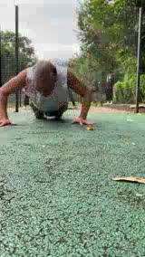

8 段 RAW
CASE_0001 双机位 + TESTSET-01 六段。原始视频只读，不拿分析产物覆盖原证据。
CURRENT｜2026-09-28
主线：2/4 completed。 M01 COMPLETED；M02 ACCEPTED_L1_CANDIDATE_ONLY（仅认证盲审流程与结构，不认证完整次数、动作质量、真实深度或30vs60效应）；M03 BLOCKED_CLEAN_CONTEXT；M04 BLOCKED_BY_M03，正式RESULTS未形成。
共同人体坐标系：ACTIVE。完整样板 V1.0 已嵌入本页，上肢自然语言解析器已接入“我要练”输入；全身3D人体库已登记为统一底层：我要练 → 身体/自然语言映射 → 姿势/目的/条件/器械 → 动作匹配 → 中央可见运动示范 → 右侧关节/解剖/技术/运动科学/拉伸。右上肢5件 BodyParts3D 真实OBJ已进入受控发布链；右上臂与右前臂已新增独立点击热区并与自然语言入口共用同一解析器；动态运动关系仍由教学模型展示，二者不混称。
儿童青少年：V0.2 已交叉认证；社区分级：V0.1 比较管线已形成、待交叉认证。两线均已有实物，不再显示 RESTART_NOW。
恢复主线条件：建立未读取Q结果的独立M03执行上下文 → D独立交卷 → C双交卷验收 → M04正式RESULTS。阻塞期间不写“正在盲审”。
完整样板优先｜V1.0 · 上肢自然语言解析已接入
这一页先只把一条链跑透。其他身体部位以后复制数据结构，不复制开发工作。
屈肘阶段｜肘屈角增加；若外部负荷要求屈肘肌产生净屈曲力矩且肌肉缩短，可描述为向心阶段。
教学动作模型：可拖动旋转、滚轮缩放、点击结构；用于动作关系和交互验证，不作为精确解剖。
正在从本站受控资产目录加载5件官方OBJ…
静态解剖网格双ID：右肱骨 BP9206→FJ3368、右桡骨 BP8464→FJ3349、右尺骨 BP8233→FJ3391、右肱二头肌长头 BP5566→FJ1478、短头 BP5558→FJ1512。BP是部件/表示记录，FJ是OBJ网格元素；输入“右二头训练”或“右小臂放松”可在结果中读回同一映射。本层不伪造关节运动、肌肉形变、力臂或肌腱路径。
学习界面当前仍聚焦上肢，但底层不再按部位重复建库。主人体底座采用 Human Atlas 整理后的 BodyParts3D 4.0：2,234 个独立3D结构、3,432 个命名FMA概念、15个解剖系统。以后切换胸、背、下肢、躯干、头颈时直接调用同一底座。
眼/视觉 · 耳/听觉与平衡 · 鼻/嗅觉 · 口腔与舌/味觉 · 皮肤/触觉。这里作为学习入口；底层仍连接各自真实解剖系统，不把日常“五官”分类强行当作现代解剖学系统。
示例：肱二头肌 → 起止骨性结构 → 跨越肩/肘关系 → 肌皮神经支配 → 上肢血供关系 → 动作中的呼吸/循环背景。以后点一个结构，可以沿关系网继续认识人体，而不是退出当前学习重新翻一本“器官图谱”。
这些按钮目前是资产层级预览，因此明确禁用，不制造“全身已加载”的假象。右上肢5件真实mesh已接入本页；其余全身资产仍未进入受控发布链。
关节特别处理：“关节长什么样”属于解剖3D层；“关节怎样运动、轴在哪里、活动范围是多少”属于运动学/证据层。两者用同一标准ID连接，但不互相猜测。
来源登记：anatomy-source-registry-v0.1.json。应用代码 MIT；BodyParts3D 4.0 解剖数据 CC BY 4.0，正式再发布保留归属。
开放底层门禁：Human Atlas 应用代码 MIT；BodyParts3D 4.0 解剖数据为 CC BY 4.0，本页保留来源与结构ID。右上肢5件真实OBJ已复制到本站受控发布链并单独显示；教学动作模型暂不替换，以免把静态解剖网格冒充运动学模型。OpenSim 作为后续肌骨计算层，不与解剖几何来源混为一谈。
一个页面原则：研究现场、三博士意见和证据以后都在这里展开，不再要求你来回跳页面。
这是第一版研究现场表达。Q/D已经产生实质内部结果，但盲性和冻结输入未通过；页面明确显示限制，不把它们冒充正式结果。以后视频分析会把时间轴上的色块换成可点击关键帧和骨架轨迹。
CASE_0001 双机位 + TESTSET-01 六段。原始视频只读，不拿分析产物覆盖原证据。
看到一个运动周期，不自动算作一次有效动作。
Q下载为eb3343…且不可解码；D下载为5cd455…且可解码。统一冻结输入未成立，正式RESULTS继续为空。
CASE_0002已经放入第一张真实关键帧。接下来每个CASE顶部继续放真实关键帧：准备位 / 动作中段 / 转换或风险位置。然后在图片上叠加肩、髋、膝等关节点和轨迹。文字退到图片下面解释，而不是反过来。

我们看到：主要动作区有较规则的周期。
准备 ⚠进入地面 ■主要动作 ⚠退出地面 结束
为什么暂不直接计数：进出地面的过渡动作也会制造很大的运动信号，容易多算。
你可以问：“进入地面”和第一次真正动作到底怎么分？
我们看到：侧面60fps更容易分清顶部/底部；低机位正面一次动作会出现多个运动峰。
示意：一次真实动作 ≠ 一个运动峰；灰色小段表示同一动作内部可能出现额外峰值
已经推翻：“一个运动峰 = 一次动作”。
你可以问：能不能直接用肩、髋的轨迹而不是整个人的运动量？
我们看到：长视频前段有大量非动作内容，真正深蹲出现在后面的动作区间。
走动/准备 ⚠定位 ■有效动作区 结束
为什么重要：如果整段视频直接找峰，走路、调整位置都会被算进去。
你可以问：AI怎样自动找到“真正开始做动作”的那一刻？
下面三栏直接嵌在本页；独立页面保留为技术备用入口，不再作为主要使用方式。
状态：任务包已存在，正式结果待补。
未来这里显示：动作区间、候选次数、看不清的位置、视角优缺点。
状态：任务包已存在，正式结果待补。
未来这里显示：哪里可能误算、漏算、重复算；哪条规则可能过拟合。
已完成：三组配对工作确认；同步仍为候选；最终次数保持 UNKNOWN。
关键发现：先找动作区间；不能用单峰计数；不同机位价值不同。
交叉后输出： ✓ 三方一致 ｜ ⚠ 有冲突 ｜ ? OPEN ｜ 🔎 点开看具体时间点/关键帧/证据。
第一层只看图和一句话；第二层看为什么；第三层才展开帧号、角度、坐标、算法和版本。
L0 候选 → L1 单视角支持 → L2 双视角支持 → L3 双视角多指标支持 → L4 审计确认。次数是下游结果，不是看到周期就直接加1。